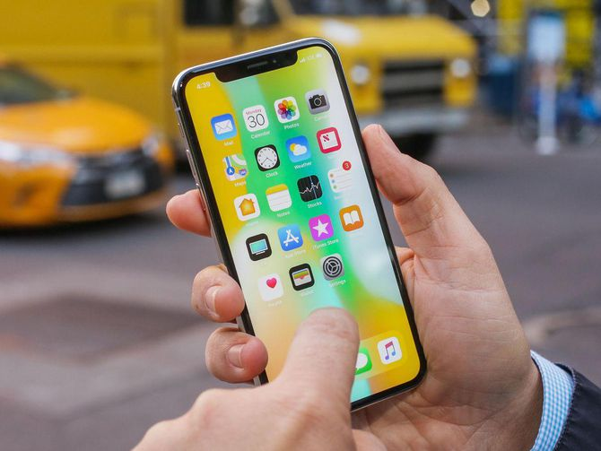
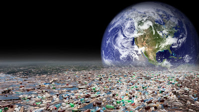
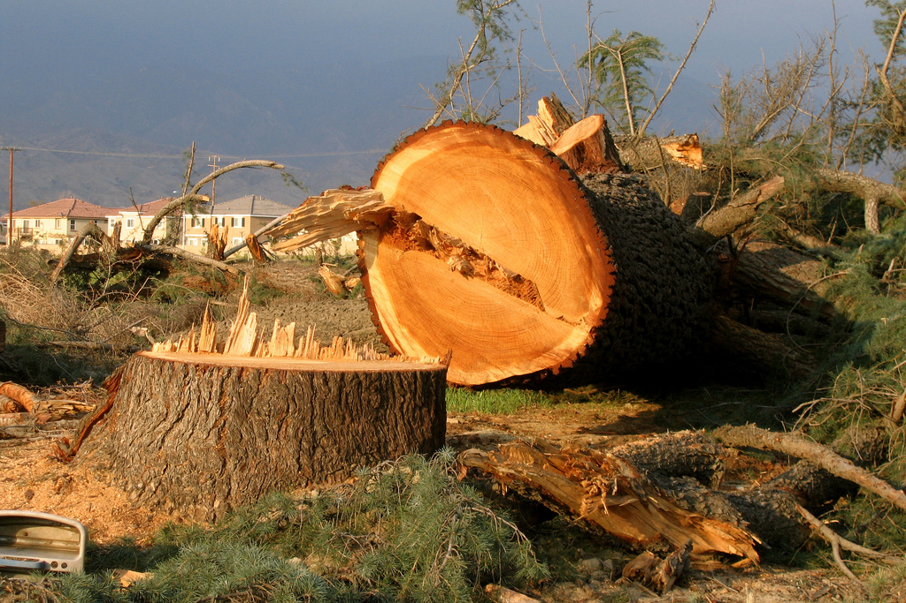

Are you helping destroy the planet?
An article by Fatima Malik

Are you dependent on your phone or laptop? Are you continuously using gadgets? I mean, you are reading this article on a technological thingamajig, aren’t you? Well, let me tell you something you already know…technology is ruining our environment and we really need to step up and do something about it, especially if we want our children and grandchildren to live in a safe and healthy environment.
Technology has a negative impact on our environment and can cause drastic changes in our climate, global warming, cause harm to animals, plants, and humans. We are all so addicted to our smartphones, laptops and televisions that we constantly need electric energy to keep them working 24/7. Is that really healthy for the environment and for us? The reason power consumption is very high is because of the amount of technology used at home, work, school and even outdoor places that most people go to relax, like cafes. You know, what is actually amusing is that cafés used to be a place where people would go and drink tea/coffee and catch up with family or friends. Now, it is a place that most people go alone to use free Wi-Fi and be on their laptops — and some people even stay all day! This energy being used is generated by fossil or nuclear fuels. Decades ago, humans did not use electricity throughout the day, but now we need it running 24/7 to use our gadgets to text our friends, do school work, or post a selfie on Instagram and then post that same selfie on Snapchat and Tinder or whatever new social media app is out. Society is going so crazy over these apps that we’ve forgotten how to communicate with one another face to face, or ask someone on a date the real way and save electrical energy.

We have new technology out every day — who wants the new iPhone X, because I definitely feel the need to get one for myself and forget about my old one that I got a year ago. By creating more technology, there is more waste being generated, because who wants the old technology? Not me.
A lot of people invest in laptops due to its compactness and portability, so most desktops or bigger computers are being thrown out, leading to a tremendous amount of waste. This waste is highly toxic because it contains metals like mercury, which can cause life-threatening issues all over the world. New technology is being created ridiculously fast, leading me to my last point of why we need to use less technology to save our planet.

Because we want more than comfort, to live in a technological world at all time and have developed homes, there is a widespread deforestation. It’s due to the vast number of factories/machinery, houses, and resorts clearing the greenery in a short span of time, thus greatly affecting nature. Due to this, many species of plants, animals, birds and bees have become extinct. This will affect us destructively if we continue to keep the habits that we have developed throughout these decades. It is time to make changes, one by one, to keep our planet healthy and safe.